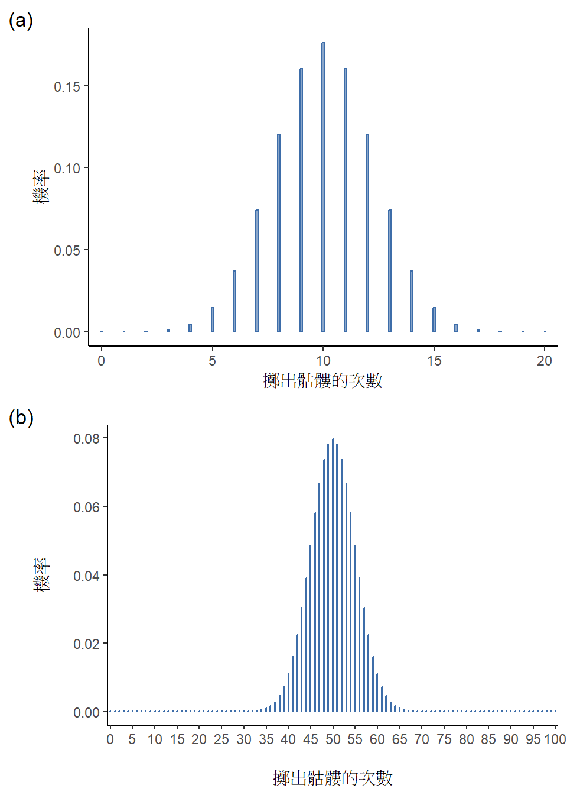

| 投擲硬幣次數 | 硬幣正面朝上次數 | 正面朝上的次數比例 |
| 1 | 0 | 0.00 |
| 2 | 1 | 0.50 |
| 3 | 2 | 0.67 |
| 4 | 3 | 0.75 |
| 5 | 4 | 0.80 |
| 6 | 4 | 0.67 |
| 7 | 4 | 0.57 |
| 8 | 5 | 0.63 |
| 9 | 6 | 0.67 |
| 10 | 7 | 0.70 |
| 11 | 8 | 0.73 |
| 12 | 8 | 0.67 |
| 13 | 9 | 0.69 |
| 14 | 10 | 0.71 |
| 15 | 10 | 0.67 |
| 16 | 10 | 0.63 |
| 17 | 10 | 0.59 |
| 18 | 10 | 0.56 |
| 19 | 10 | 0.53 |
| 20 | 11 | 0.55 |
7 機率入門
(以下為AI初翻，尚待校稿) =
(上帝)只允許我們置身于…機率的微光之中。
– 約翰·洛克
在本書到目前為止的部分,我們討論了實驗設計的一些關鍵思想,並且我們稍微討論了如何總結一個資料集。對許多人來說,這就是統計學的全部:收集所有數字,計算平均值,繪製圖片,並在某個報告中將它們全部放在一起。有點像數字版的集郵。然而,統計學涵蓋的範圍遠不止於此。事實上,描述性統計學是統計學最小的一部分,也是最不強大的一部分。統計學更大和更有用的一部分在於它提供的信息使您可以對資料進行推論。
一旦你以這種方式來思考統計學,認為統計學是在那裡幫助我們從資料中得出結論,你就會開始看到它無所不在的例子。例如,這是一個來自《雪梨晨鋒報》(2010年10月30日)的簡短摘錄:
“我的工作很艱鉅,”面對一項民調表明她的政府現在是歷史上最不受歡迎的工黨政府的調查結果,總理如是說,初選票只有23%。
這種評論在報紙或日常生活中並不引人注目,但讓我們來思考它所暗示的內容。民調機構進行了一次調查,通常是相當大規模的,因為他們有資金。我太懶了,不想查找原始調查,所以讓我們假Imaginer他們隨機抽取了1000位新南威爾斯(NSW)選民,其中230人(23%)聲稱他們打算投票給澳大利亞工黨(ALP)。根據澳大利亞選舉委員會的報告,2010年聯邦大選在新南威爾斯有4,610,795登記選民,所以其餘4,609,795名選民(約99.98%的選民)的意見對我們來說仍然不明。即使假設沒有人在民調中說謊,我們可以100%確定的是,真正的ALP初選票數在230/4610795(約0.005%)和4610025/4610795(約99.83%)之間。那麼,民調機構、報社和讀者得出ALP初選票只有大約23%的結論的依據是什麼?
這個問題的答案相當明顯。如果我隨機打電話給1000人,其中230人表示打算投ALP,那麼這些人很可能並不是整個選民中實際打算投ALP的唯一230人。換句話說,我們假設民調機構收集的資料與整個人群比較代表性。但是有多少代表性呢?如果我們發現ALP的真正初選票實際上是24%? 29%? 37%?這時候直觀開始有點動搖。沒有人會對24%感到驚訝,每個人都會對37%感到驚訝,但是很難說29%是否令人信服。我們需要比查看數字和猜測更強大的工具。
推論統計學提供了我們需要的工具來回答這些問題,而由於這些問題位於科學工作的核心,它們佔據了每門簡介統計學和研究方法課程的絕大部分內容。然而,統計推論理論是建立在機率論的基礎上的。我們現在必須轉向機率論。這個對機率論的討論基本上是背景詳情。本章沒有太多統計內容,您也不需要像理解本書這部分的其他章節那樣深入地理解這些材料。儘管如此,由於機率論確實支撐了統計學的如此之大的一部分,所以涵蓋一些基礎知識是值得的。
7.1 機率和統計有什麼不一樣？
在我們開始談論機率論之前,花點時間思考機率與統計學之間的關係是很有幫助的。這兩個學科關係密切,但它們不是一樣的。機率論是“隨機事件的理論”。它是數學的一個分支,告訴你不同种类事件发生的频率。例如,使用機率論可以回答所有這些問題:
一枚公平的硬幣連續擲出正面10次的機率是多少?
如果我擲兩次6面骰子,擲出兩次6的可能性有多大?
從洗混完美的牌組中抽出5張牌全部都是紅心的可能性有多大?
我贏得彩票的機率是多少?
請注意,所有這些問題都有一些共同點。在每種情况下,“世界事實”都是已知的,我的問題與“什麼樣的事件”會發生有關。 在第一個問題中,我知道硬幣是公平的,所以每次擲幣正面朝上都有50%的機率。 在第二個问题中,我知道擲一枚骰子擲到6的機率為1/6。 在第三個問題中,我知道牌組洗混得当。 在第四個問題中,我知道彩票遵循特定規則。 您懂得。關鍵點是機率問題是從已知的世界模型出發的,我們使用該模型進行一些計算。 相關模型可以非常簡單。例如,在擲幣示例中,我們可以這樣寫下模型:
\[P(\text{正面})=0.5\]
您可以把它讀作“擲到正面的機率為0.5”。 正如我們稍後會看到的,與百分比是從0%到100%的數字一樣,機率只是從0到1的數字。 在使用這個機率模型回答第一個問題時,我实际上並不知道會發生什麼。也許像問題所說,我會得到10次正面。但也許我會得到3次正面。 這就是關鍵。 在機率論中,模型是已知的,但數據是未知的。
這就是機率。那統計學呢?統計問題的工作原理相反。在統計學中,我們並不知道世界的真相。我們所擁有的唯一是數據,我們希望從數據中了解世界的真相。統計問題趨向於更像這些:
如果我的朋友擲幣10次全是正面,他們是在愚弄我嗎?
如果牌組頂部的五張牌都是紅心,牌組是否洗混的可能性有多大?
如果彩票委員的配偶贏得了彩票,彩票是否有人操作的可能性有多大?
這次我們擁有的唯一東西就是數據。 我知道的是,我看到我的朋友擲幣10次,每次都是正面。 我想推斷的是我是否應該得出我剛才看到的只是10次連續擲出的公平硬幣,或者我是否應該懷疑我的朋友在愚弄我。 我擁有的數據如下:
正面 正面 正面 正面 正面 正面 正面 正面 正面 正面
我正在嘗試去弄清楚我應該相信哪種“世界模型”。 如果硬幣是公平的,那麼我應該采用的模型是正面機率為0.5,即 \(P(\text{正面}) = 0.5\)。 如果硬幣不公平,那麼我應該得出正面的機率不為0.5,我們將其寫為 \(P(\text{正面})\neq0.5\)。 換句話說,統計推論的問題是弄清楚這些機率模型中哪個是正確的。 顯然,統計問題與機率問題不是一樣的,但它們之間有深刻的聯繫。 因此,統計理論的良好介紹將從討論機率的定義及其運作原理開始。
7.2 如何解讀機率？
讓我們從第一個問題開始。“機率”是什麼?您可能會感到驚訝,儘管統計學家和數學家(大多數)同意機率的規則是什麼,但對該詞的真正意義卻沒有太多共識。 這似乎很奇怪,因為我們都非常習慣使用像 “可能性”、“很有可能”、“有可能” 和 “很可能” 這樣的詞,回答這個問題似乎不應該很困難。 但是,如果你生活中曾有過這種經歷,你可能會覺得你没有完全搞懂,並且(像許多日常概念一樣)事實證明你並不真正知道這是怎麼回事。
那么我來試試。假設我想打賭一場两個机器人球队的足球賽,阿杜伊諾阿森納和米蘭。經過深思熟慮后,我決定阿杜伊諾阿森納贏得的機率為80%。我這麼說是什麼意思呢?這裡有三种可能性:
它們是機器人球隊,所以我可以讓它們一次又一次地比賽,如果這樣的話,平均而言,阿杜伊諾阿森納會贏得10場比賽中的8場。
對於任何一場比賽,我會同意押注這場比賽只有當押注米蘭1美元能獲得5美元的賠率時(即我獲得我的1美元再加上4美元的正確獎勵),相應地,押注阿杜伊諾阿森納4美元也是一樣(即我的4美元加上1美元的獎勵)。
我對阿杜伊諾阿森納獲勝的主觀“信念”或“信心”是對米蘭獲勝的信念的四倍。
這些似乎都有道理。然而,它們不是一樣的,並且不是每個統計學家都會認可其中所有的陳述。原因是存在不同的統計學流派(沒錯,真的有!),並且取決於您追隨哪一派,您可能會說其中一些陳述毫無意義或不相干。在本節中,我簡要介紹了文獻中存在的两大主要方法。這些绝不是唯一的方法,但它們是两大主要方法。
7.2.1 次數主義觀點
第一個也是統計學中更占主導地位的两大機率觀點稱為次數主義觀點,它將機率定義為長期頻率。假设我們試圖一次又一次擲掷一枚公平的硬幣。按定義,這是一枚擁有\(P(H)= 0.5\)的硬幣。我們可能會觀察到什麼?一种可能性是前20次投掷如下:
尾,正,正,正,正,尾,尾,正,正,正,正,尾,正,正,尾,尾,尾,尾,尾,正
在這20次投掷中有11次(55%)為正面。 现在假设我一直記錄着我見過的頭數 \(N_H\),跨越前 N 次投掷,並在每次計算比例 \(\frac{N_H}{N}\)。 表格 7.1 顯示了我得到的結果(我確實是這樣產生的!):
請注意,在序列開頭,頭的比例波動很大,一開始為\(.00\),后來升至高達\(.80\)。后來,人們會得到一種印象,即越来越多的值实际上非常接近“正确”答案 \(.50\)。 这就是次數主義機率的核心定義。一次又一次地擲掷一枚公平的硬幣,並且當 N 變大(接近無窮大,表示為 \(N \rightarrow \infty\) )時,正面的比例將收斂至 50%。數學家們在技術上還關注一些其他細节,但是從定性的角度来说,這就是次數主義者定義機率的方式。不幸的是,我没有無限数量的硬幣或反复無限次投掷硬幣所需的無限耐心。然而,我確實有一台電腦,電腦擅長不假思索的重複任務。 所以我讓我的計算機模擬投掷硬幣1000次,然后繪製了當 N 增加时 \(\frac{N_H}{N}\) 的比例發生什麼的圖片。事實上,為了確保這不是偶然的,我做了四次。 結果如 图 7.1 所示。 如您所見,觀察到的正面比例最终停止波动並穩定下来。 當它穩定时,它最终停留的数字就是正面機率的真實值。
次數主義機率定義具有一些理想的特征。首先,它是客觀的。事件的機率必然取決於事實。機率陳述只有在它們指代(一系列)物理世界中發生的事件時才有意義。1 其次,它是明確的。觀察同一序列事件展開的任何两人,企圖计算某個事件的機率,必然计算出相同的答案。
然而,它也有不利的特点。首先,物理世界中没有存在無窮序列。假設您从口袋里拿出一枚硬幣並開始擲掷。 每次它落地時都會撞到地面。 每次撞擊都會使硬幣磨損一點。 最终硬幣會被摧毀。 因此,有人可能会问,假装“无限”次投掷硬幣序列甚至是有意义的概念,或者是客觀的概念,这真的有意义吗? 我们不能说“无限序列”事件在物理宇宙中是真实的东西,因為物理宇宙不允许无限的任何东西。 更严重的是,次數主義定義的範圍很窄。 人類在日常語言中很樂意將機率指派给很多事物,但是在理論上也無法將其映射到一個假想的事件序列上。例如,如果氣象預報員上電視说“2018年11月2日阿德雷德降雨的機率為60%”,我們人類很樂意接受這一點。 但是很難用次數主義术語來定義這一點。 阿德雷德只有一座城市,2048年11月2日也只有一天。这里没有无限序列,只是一個一次性事件。 次數主義機率確實禁止我們對單個事件進行機率陳述。從次數主義角度來看,明天要么下雨,要么不下雨。 沒有可以指派给不可重複事件的“機率”。 当然,應該指出次數主義者可以使用一些非常聰明的技巧來解決这個问题。 一种可能性是氣象預報員的意思有點像:“有一類我預測有 60% 機率降雨的日子,如果我們只看我做出這個預測的那些日子,那么在 60% 的那些日子裡,降雨是實際发生的”。 這樣想有點奇怪和反直覺,但您會看到次數主義者有時會這樣做。 这将在本书的后面出现(例如在 章节 8.5)。

7.2.2 貝氏觀點
貝氏觀點的機率通常被稱為主觀機率,雖然在統計學家中一直是少數派觀點,但在過去几十年中一直在穩步獲得影響力。 貝氏主義有很多流派,很難確切說明“貝氏”觀點是什麼。 最常見的主觀機率思維方式是將事件的機率定義為智能合理的代理人對該事件事實的信念程度。 從這個角度來看,機率並不存在于世界中,而是存在于人類和其他智能生物的思想和假設中。2
然而,為了使這種方法奏效,我們需要一些方法來操作化“信念程度”。 一種可以做到這一點的方法是用“理性博弈”的方式將其形式化,儘管還有許多其他方法。 假设我相信明天下雨的機率為 60%。 如果有人提供我一個賭注,如果明天下雨,我贏5美元,如果不下雨,我輸5美元。 從我的角度來看,這顯然是一個相當好的賭注。 另一方面,如果我認為降雨的機率只有 40%,那麼接受這個賭注就是不明智的。 因此,我們可以通過我願意接受的賭注操作化“主觀機率”的概念。
貝氏方法的優缺點是什麼? 主要優點是它允許您指派想要的任何事件的機率。 您不需要局限于那些可重複的事件。 主要缺點(對許多人來說)是我們不能完全客觀。 指定一個機率要求我們指定一個具有相應信念程度的實體。 這個實體可能是一個人類、外星人、機器人或者甚至一個統計學家。 但是必須有一個智能代理存在並有某些信念。 對許多人來說,這是令人不舒服的,似乎會使機率變得武斷。 儘管貝氏方法要求相關代理人是理性的(即遵守機率規則),但它確實允許每個人都有自己的信念。 在硬幣公平的問題上,我可以相信硬幣是公平的,而您不需要,即使我們都是理性的。 次數主義觀點不允許任何两個觀察者為同一事件指派不同的機率。 當這種情况發生時,至少其中一人必須是錯的。 貝氏觀點並没有阻止这种情况发生。 兩個具有不同背景知識的觀察者可以合法地對同一事件持有不同信念。 简而言之,次數主義觀點有時被認為範圍太窄(禁止很多我們想要指派機率的事物),而貝氏觀點有時則被認為範圍太廣(允許觀察者之間太多差異)。
7.2.3 觀點之間的差異是什麼？何者正確？
既然您已經看到了這兩種觀點中的每一種,確保您能夠對比兩者是很有用的。回到本節開頭的假想機器人足球比賽。您認為次數主義者和貝氏主義者會如何看待這三個陳述?哪個陳述次數主義者會說是機率的正確定義?貝氏主義者會選擇哪一個?這些陳述中有些對次數主義者或貝氏主義者來說是否毫無意義?如果您理解了這兩種角度,您應該在某種程度上能夠回答這些問題。
好的,假設您理解其中的區別,那麼您可能想知道哪一種是正確的?老實說,我不知道是否有正確的答案。據我所知,次數主義者思考事件序列的方式在數學上沒有什麼不正確的,貝氏主義者定義一個理性代理人的信念的方式在數學上也沒有什麼不正確的。事實上,當您深入研究細節時,貝氏主義者和次數主義者實際上在很多事情上意見一致。許多次數主義方法會導致貝氏主義者認為一個理性代理人會做出的決定。許多貝氏主義方法具有非常好的次數主義特性。
在大多數情况下,我是務實主義者,所以我會使用任何我信任的統計方法。事實證明,這使我更喜歡貝氏主義方法,原因我將在書的最後解釋。但是我並不從根本上反對次數主義方法。並非每個人都如此輕鬆自在。例如,考慮 Fisher (1922) 的羅納德·費雪爵士,20世紀統計學的偉大巨人之一,反對一切與貝氏主義有關的事物的激烈反對者,他在統計學數學基礎文章中將貝氏機率稱為 “不可突破的叢林會 阻止統計概念的精準進步”(第 311 頁)。或者 Meehl (1967) 的心理學家保羅·米爾,他認為依靠次數主義方法會使您變成 “一個有生育能力但不育的知識分子荒腔走板,在他快樂的道路上留下了一長串受害者,但沒有任何有效的科學後代”(第 114 頁)。您可能會發現,統計學的歷史並不乏味。
無論如何,雖然我個人更喜歡貝氏主義的觀點,但大多數統計分析都是基於次數主義方法的。我的推論很務實。這本書的目的是涵蓋與典型本科心理統計課大致相同的內容,如果您想了解大多數心理學家使用的統計工具,您將需要很好地掌握次數主義方法。我向您保證,這並不是浪費精力。即使最終您想切換到貝氏主義角度,您也真的應該至少通讀一本關於 “正統” 次數主義觀點的書。此外,我不會完全忽略貝氏主義角度。每隔一段時間,我會從貝氏主義角度添加一些評論,並將在 章节 16 更深入地重新訪問這個話題。
7.3 基本機率理論
7.3.1 機率分佈入門
我生活中令人不安的真相之一是,我只有5條褲子。三條牛仔褲,一套西裝的下半身和一條運動褲。更令人難過的是,我給它們起了名字:我把它們稱為\(X_1\)、\(X_2\)、\(X_3\)、\(X_4\) 和 \(X_5\)。我真的有,這就是為什麼他們稱我為Mister想像力。現在,在任何給定的一天,我會挑選穿上正好一條褲子。即使是我,也不會愚蠢到嘗試穿兩條褲子,而且由於多年的訓練,我再也不會不穿褲子就外出了。如果我要用機率論的語言來描述這種情况,我會將每條褲子(即每個 \(X\))稱為基本事件。基本事件的關鍵特徵在於,每次我們進行觀察(例如,每次我穿上一條褲子時)的結果將是且只是這些事件中的一個。就像我說的,近年來我總是穿著正好一條褲子,所以我的褲子滿足這個約束條件。同樣,所有可能事件的集合稱為樣本空間。當然,有些人會稱它為“衣櫃”,但那是因為他們拒絕以機率術語來思考我的褲子。太遺憾了。
好的,現在我們有了一個樣本空間(衣櫃),它是由許多可能的基本事件(褲子)構建而成,我們要做的就是為這些基本事件中某個分配一個機率。對於事件\(X\),該事件的機率\(P(X)\)是介於0和1之間的數字。\(P(X)\)的值越大,事件發生的可能性就越大。因此,例如,如果\(P(X)=0\),則表示事件\(X\)是不可能發生的(即,我從不穿那條褲子)。另一方面,如果\(P(X)=1\),則表示事件\(X\)必定會發生(即,我總是穿那條褲子)。對於介於兩者之間的機率值,意味著我有時會穿那條褲子。例如,如果\(P(X)=0.5\),那麼意味著我一半的時間穿這條褲子。
至此,我們幾乎完成了。我們需要認識到的最後一件事是“某件事總會發生”。每次我穿褲子時,我確實最終都會穿上褲子(瘋狂,對吧?)。這個有點陳腔濫調的語句在機率術語中的意思是,基本事件的機率需要加起來等於1。這被稱為機率總律,儘管我們都不太在意。更重要的是,如果滿足這些要求,那麼我們就得到了一個機率分佈。例如, 表格 7.2 顯示了機率分佈的一個示例。
| 褲子樣式 | 事件代號 | 事件機率 |
|---|---|---|
| 藍色牛仔褲 | X_1 | P(X_1)=.5 |
| 灰色牛仔褲 | X_2 | P(X_2) = .3 |
| 黑色牛仔褲 | X_3 | P(X_3) = .1 |
| 黑色西裝褲 | X_4 | P(X_4) = .0 |
| 藍色運動褲 | X_5 | P(X_5) = .1 |
每個事件都有一個介于 0 和 1 之間的機率,如果我們添加所有事件的機率,它們的和為 1。太棒了。我們甚至可以繪製一個漂亮的長條圖(見 章节 5.3)來可視化此分佈,如 图 7.2 所示。 在這一點上,我們都取得了一些成果。 您已經了解了什麼是機率分佈,而我也終于找到了一種方法來創建一個完全集中在我的褲子上的圖表。 每個人都是贏家! 我需要指出的唯一其他事項是,機率理論允許您談論非基本事件以及基本事件。 最簡單的說明該概念的方法是舉個例子。 在褲子示例中,合法地提及我穿牛仔褲的機率。 在這種情况下,“丹妮穿牛仔褲”事件若所發生的基本事件是適當的事件之一,則說已發生。 在這種情况下為“藍色牛仔褲”、“黑色牛仔褲”或“灰色牛仔褲”。 在數學術語中,我們將事件 \(E\) 定義為對應于基本事件集 \((X1,X2,X3)\)。 如果發生任何這些基本事件,則也說事件 \(E\) 已經發生。 決定以這種方式寫下 \(E\) 的定義后,很容易說明 \(P(E)\) 的機率是多少,並且由于藍色、灰色和黑色牛仔褲的機率分別為 \(.5\)、\(.3\) 和 \(.1\),我穿牛仔褲的機率等于 \(.9\)。就是:我們只需全部加起來。 在這種特定情况下,\[P(E)=P(X_1)+P(X_2)+P(X_3)\] 這時您可能會認為,這一切都太明顯和簡單了,您是對的。 我們所做的实际上只是在一些常識直觀周圍裹上一些基本數學。 然而,從這些簡單的開端出發,可以構建一些非常強大的數學工具。 我絕不會在這本書中深入細節,但是我會在 表格 7.3 中列出機率滿足的其他一些規則。 這些規則可以從我前面概述的簡單假設推導出來,但是由於我們在本書中實際上並没有使用這些規則,所以我不會在这里這樣做。

| English | Notation | Formula |
| not A | \(P (\neg A) \) | \(1-P(A) \) |
| A or B | \(P(A \cup B) \) | \(P(A) + P(B) - P(A \cap B) \) |
| A and B | \(P(A \cap B) \) | \(P(A|B) P(B) \) |
7.4 二項分佈
您可以想像,機率分佈會有很大差異,並且有大量不同的分佈。但是,它們並非都同等重要。事實上,本書絕大部分內容依賴於五種分佈中的一種:二項分佈、常態分佈、 t 分佈、\(\chi^2\)(“卡方”)分佈和 F 分佈。鑑於此,我在接下來的幾節中要做的就是簡要介紹這五種分佈,並特別關注二項分佈和常態分佈。我將從二項分佈開始,因為它是五種分佈中最簡單的。
7.4.1 二項分佈入門
機率論的起源是試圖描述運氣遊戲的工作原理,所以我們討論二項分佈時涉及擲骰子和擲幣似乎很合適。讓我們想象一個簡單的“實驗”。我滾燙的小手中拿著20個相同的六面骰子。 每個骰子的一個面上有一個骷髏圖案,其他五個面都是空白的。 如果我繼續擲出所有20個骰子,我會得到正好4個骷髏的機率是多少? 假設骰子是公平的,我們知道任何一個骰子出現骷髏的機率是 1/6。 用另一種方式說,單個骰子的骷髏機率約為.167。 這些信息足以回答我們的問題,所以讓我們看看如何完成。
和往常一樣,我們將引入一些名稱和一些符號。我們將使用\(N\)表示我們實驗中的骰子擲出次數,這通常被稱為我們二項分佈的大小參數。 我們也將使用\(\theta\)引用單個骰子出現骷髏的機率,這個量通常被稱為二項式的成功機率3。 最後,我們將使用 \(X\) 引用我們實驗的結果,即我擲骰子時得到的骷髏數。 由於 \(X\) 的實際值是由機率決定的,我們將其稱為隨機變數。無論如何,現在我們有了所有這些術語和符號,我們可以用它們來更準確地陳述問題。 我們要計算的量是在知道 \(\theta = .167\) 和 \(N = 20\) 時 \(X = 4\) 的 機率。 我有興趣計算的事物的一般“形式”可以寫為
\[P(X|\theta,N)\]
我們感興趣的是 \(X = 4, \theta = .167\) 和 \(N = 20\) 的特殊情况。
[附加技術細節 4]
是的,是的。 我知道你在想什麼:符號,符號,符號。 真的,誰在乎? 這本書的很少讀者是為了符號而來的,所以我可能應該繼續前進,談論如何使用二項分佈。 我已在腳注中5包含了二項分佈的公式,因為一些讀者可能想要自己使用它,但是由於大多數人可能不太在意,並且因為我們在本書中並不需要該公式,所以我不會詳細談論它。 相反,我只想讓你看看二項分佈的樣子。
為此,图 7.3 繪製了我們的擲骰實驗中所有可能的 \(X\) 值的二項式機率,從 \(X = 0\)(没有骷髏)一直到 \(X = 20\)(全部骷髏)。 請注意,這基本上是一個長條圖,与我在 图 7.2 中繪製的“褲子機率”圖沒有區別。 在水平軸上,我們有所有可能的事件,在垂直軸上,我們可以讀取每個事件的機率。 所以,滾出 \(4\) 個骷髏的機率是約 \(0.20\)(實際答案是 \(0.2022036\),我們很快會看到)。 換句話說,如果您重複這個實驗,預計這种情况会发生大约 20% 的次数。
為了讓您感受一下改變 \(\theta\) 和 \(N\) 的值时二項分佈會发生什么变化,讓我們假設我实际上是在擲硬幣而不是擲骰子。 這次,我的實驗涉及反复擲掷一枚公平的硬幣,我感興趣的結果是我觀察到的頭數。 在這種情况下,成功機率現在是 \(\theta = \frac{1}{2}\)。 假設我擲硬幣 \(N = 20\) 次。 在這個示例中,我改變了成功機率但保持了實驗的規模。 這對我們的二項分佈有什么影響? 好吧,正如 图 7.4 所示,這的主要影響是移動整個分佈,正如您所料。 好吧,如果我擲 \(N = 100\) 次硬幣呢? 那麼,在這種情况下,我們得到 图 7.4(b)。 該分佈仍保持在中間,但可能的結果有更多變化。

7.5 常態分佈
雖然概念上二項分佈是最簡單的分佈,但它並不是最重要的分佈。這項特殊榮譽屬於常態分佈,也稱為“鐘形曲線”或“高斯分佈”。常態分佈使用兩個參數來描述:分佈的均值 μ 和分佈的標准差 \(\sigma\)。我們有時使用的符號來說明一個變數 \(X\) 是常態分佈的如下:
\[X \sim \text{Normal}(\mu,\sigma)\]
[附加技術細節 6]
\[p(X|\mu, \sigma) = \frac{1}{\sigma\sqrt{2\pi}}e^{-\frac{(X-\mu)^2}{2\sigma^2}}\]
讓我們試圖瞭解變數遵循常態分佈意味著什麼。為此,请看 图 7.5,其中繪製了平均值 \(\mu = 0\) 和標准差 \(\sigma = 1\) 的常態分佈。您可以看到它被稱為“鐘形曲線”的原因;它看起來有點像鐘。 請注意,與我繪製的用於說明二項式分佈的圖不同,图 7.5 中常態分佈的圖片顯示了光滑的曲線而不是“直方圖狀”的長條。這不是任意選擇的,常態分佈是連續的,而二項式是離散的。例如,在上一節中的擲骰子示例中,可以獲得3個骷髏或4個骷髏,但不可能獲得3.9個骷髏。我在上一節中繪製的圖反映了這一事實。例如,在 图 7.3 中,在 \(X = 3\) 處有一個長條,在 \(X = 4\) 處有另一個長條,但之間没有。 連續量没有這種限制。例如,假設我們在談論天氣。 悠閒的春天氣溫可能是23度、24度、23.9度或介于兩者之間的任何位置,因為溫度是連續變數。 因此,常態分佈可能非常適合用于描述春季氣溫7。

考慮到這一點,讓我們看看我們是否可以直觀地瞭解常態分佈的工作原理。首先,讓我們看一下改變分佈參數時會發生什麼。為此, 图 7.6 繪製了具有不同均值但具有相同標准差的常態分佈。您可能預期的是,所有這些分佈都具有相同的“寬度”。它們之間的唯一區別在于它們已向左或向右移動。在其他所有方面,它們都是相同的。相比之下,如果我們在保持均值不變的情况下增加標准差,則分佈的峰值保持在同一位置,但分佈變得更寬,如您在 图 7.7 中所見。但是,請注意,當我們擴大分佈時,峰值的高度會下降。這必須發生,就像我們用於繪製離散二項式分佈的長條的高度必須相加為1,常態分佈下的總面積也必須等于1。在繼續讀下去之前,我想指出常態分佈的一個重要特性。無論實際平均值和標準差是多少,\(68.3\%\) 的面積落在平均值的1個標準差內。同樣,\(95.4\%\) 的分佈在均值的2個標準差内,\(99.7\%\) 的分佈在3個標準差内。 图 7.8 和 图 7.9 說明了這個想法;另請參見 图 7.9 。

7.5.1 機率密度
在我討論常態分佈的過程中,有一兩件事情不太合理。您可能已經注意到這些圖中的 y 軸標記為“機率密度”而不是密度。您可能已經注意到,在給出常態分佈公式時,我使用了 \(p(X)\) 而不是 \(P(X)\)。
事實證明,這裡呈現的並不是實際的機率,而是其他東西。要理解那是什麼,您需要花一些時間思考什麼是說 \(X\) 是連續變數的真正意思。假設我們正在談論室外的溫度。溫度計告訴我是 \(23\) 度,但我知道這並不是真的。它並不是正好 \(23\) 度。也許是 \(23.1\) 度,我心裡想。但我知道這也並不是真的,因為它實際上可能是 \(23.09\) 度。但是我知道……好吧,你懂的。真正連續量的棘手之處在於您永遠不會真正知道它們的準確值。
現在想一想這對我們談論機率意味著什麼。假設明天的最高溫度從平均值為 \(23\) 度、標准差為 1 的常態分佈中抽樣。溫度正好是 \(23\) 度的機率是多少?答案是“零”,或者可能是“一個如此接近零以至於可以視為零的數字”。這是為什麼?這就像試圖向一個無限小的飛鏢靶心投一支鏢。無論您的瞄準多好,您都永遠不會命中。在現實生活中,您永遠不會得到正好 \(23\) 度的值。它總會是像 \(23.1\) 或 \(22.99998\) 或者類似的值。換句話說,談論溫度正好是 \(23\) 度的機率是完全没有意義的。然而,在日常語言中,如果我告訴你室外是 \(23\) 度,而實際上是 \(22.9998\) 度,你可能不會稱我為騙子。因為在日常語言中,\(23\) 度通常意味著“在 \(22.5\) 度和 \(23.5\) 度之間的某個位置”。雖然問溫度正好是 \(23\) 度的機率並不太有意義,但是問溫度在 \(22.5\) 度和 \(23.5\) 度之間或者在 \(20\) 度和 \(30\) 度之間或者任何其他溫度範圍之間的機率確實很合理。
這段討論的重點是明確指出,當我們談論連續分佈時,談論某個特定值的機率並没有意義。然而,我們可以談論的值落在某個值範圍內的機率。為了找出某個範圍相關的機率,您需要做的就是計算“曲線下的面積”。我們已經看過這個概念了,在 图 7.8 中顯示的陰影區域描述了真實的機率(例如,在 图 7.8 中顯示了觀察到的值落在均值 1 個標準差內的機率)。
好的,這就解釋了部分故事。我已經解釋了一點關於如何解讀連續機率分佈(即曲線下的面積是關鍵)。但是我早些時候描述的 \(p(x)\) 公式实际上意味著什麼?顯然,\(P(x)\) 並不描述一個機率,但它是什麼?這個量 \(P(x)\) 的名字是機率密度,就我們繪製的圖而言,它對應於曲線的高度。密度本身並没有意義,但它們被“調整”以確保曲線下的面積始終可以解釋為真實機率。老實說,這就是您現在真正需要知道的全部內容。8
7.6 其他常見機率分佈
這是第五節“其他常見機率分佈”,我生成了以下繁体中文翻译:
常態分佈是統計學最常使用的分佈(原因很快會討論),二項分佈在很多目的下也非常有用。 但統計學的世界充滿了機率分佈,我們將在傳遞中遇到其中一些。 特別是,將在本書中出現的三個分佈是 t 分佈、\(\chi^2\) 分佈和 F 分佈。 我不會給出這些的公式,也不會過多詳細討論它們,但我會給您顯示一些圖片:图 7.10、图 7.11 和 图 7.12。


t 分佈是一種與常態分佈非常相似的連續分佈,請參見 图 7.10。 請注意,t 分佈的“尾部”比常態分佈的尾部更“重”(即向外擴展得更遠)。這是两者之間的重要區別。當您認為數據实際上遵循常態分佈但並不知道均值或標准差時,就會出现這種分佈。我們将在 章节 11 再次遇到此分佈。
\(\chi^2\) 分佈是在很多不同地方出現的另一種分佈。 我們將看到它的情况是在 章节 10 中進行分類數據分析,但它实际上無處不在。 當您深入研究數學時(而誰不喜歡這樣做呢?),結果發現 \(\chi^2\) 分佈無處不在的主要原因是,如果您有很多遵循常態分佈的變數,則計算它們的平方和加和(稱為計算“平方和”)后,此和具有 \(\chi^2\) 分佈。 你會驚訝地發現這個事實經常有用。 無論如何,以下是 \(\chi^2\) 分佈的樣子:图 7.11。
F 分佈看起來有點像 \(\chi^2\) 分佈,並且在您需要將两個 \(\chi^2\) 分佈相互比較時就會出现。 雖然聽起來這並不像任何理智的人會想要做的事情,但它在現實世界的數據分析中非常重要。 還記得我說過 \(\chi^2\) 分佈在我們進行“平方和”時是關鍵分佈嗎? 那么,這意味著如果您想比較两個不同的“平方和”,您可能正在談論一個遵循 F 分佈的東西。當然,到目前為止,我仍没有給出任何涉及平方和的示例,但是我將在 章节 13 中給出。 这也是我们将遇到 F 分佈的地方。 哦,還有 图 7.12 中的一個圖片。
好的,是時候總結本節了。 我們已經看到三种新的分佈:\(\chi^2\)、t 和 F。 它們都是連續分佈,並且它們都與常態分佈密切相關。 對我們而言,主要是您需要理解的基本思想是,這些分佈之間以及與常態分佈之間有深刻的聯系。 在本書的后面,我們將遇到遵循常態分佈或至少假定遵循常態分佈的數據。 我現在想讓您理解的是,如果您假定數據遵循常態分佈,那么当您開始進行數據分析時,在各個地方出現 \(\chi^2\)、t 和 F 分佈時,您不應感到驚訝。
7.7 本章小結
在本章中,我們討論了機率。我們討論了機率的意義以及為什麼統計學家無法就其意義達成共識。我們討論了機率必須遵守的規則。並且我們介紹了機率分佈的概念,並在本章中花了很大篇幅討論統計學家使用的一些更重要的機率分佈。逐節概述如下:
如您所料,我的內容絕不詳盡。機率論本身就是數學的一個巨大分支,與其在統計和數據分析中的應用完全分開。因此,這個主題上已經寫了上千本書,大學通常提供多門完全致力於機率論的課程。即使是記錄標準機率分佈這樣“更簡單”的任務也是一個大課題。我在本章中描述了五種標準機率分佈,但在我的書架上有一本45章的書,名為“統計分佈” (Evans 等, 2011),其中列出了很多更多分佈。幸運的是,您需要的很少。當您走出去做現實世界的數據分析時,您不太可能需要知道幾十種統計分佈,在本書中您肯定不需要它們,但是瞭解還有其他可能性永遠不會有害。
關於最後一點,在某種意義上,整章可以說是額外的內容。許多本科心理學統計課程會很快減少這部分內容(我知道我的課程就是這樣),即使是更高級的課程也經常會“忘記”重新訪問該領域的基礎。大多數學術心理學家不會區分機率和密度,直到最近,很少有人意識到貝式和次數主義機率之間的區別。然而,我認為在繼續應用之前理解這些很重要。例如,在進行統計推論時,有很多關於您“允許”說什麼的規則,其中許多看起來很武斷和奇怪。然而,如果您瞭解貝式與次數主義的區別,它們就會變得有意義。同樣,在 章节 11 中,我們將談論所謂的 t 檢定,如果您真的想完全理解 t 檢定的機制,那麼瞭解 t 分佈的實際情況真的會有幫助。我希望您理解我的意思。
這當然並不是說次數主義者不能做出假設性陳述。只是如果您想做出關於機率的陳述,則必須有可能將該陳述重新描述為潛在可觀測事件序列及該序列中出現的不同結果的相對頻率。↩︎
譯註~數學家版的貝氏定理\[Pr(A|B) = \frac{Pr(B|A)*Pr(A)}{Pr(B)}\] 統計學家版的貝氏定理\[Pr(H_i|Data) = \frac{Pr(Data|H_i)*Pr(H_i)}{\sum_{j=1}^n Pr(Data|H_j)*Pr(H_j)}\] 兩套公式取自旗標出版AI 必須！從做中學貝氏統計。↩︎
請注意,“成功”一詞是任意的,並不實際意味著結果是令人渴望的。 如果 \(\theta\) 指的是任何一位乘客在公交車事故中受傷的機率,我仍然會稱它為成功機率,但這並不意味著我希望公交車事故中有人受傷!↩︎
對於那些知道一點微積分的讀者,我會給出一個稍微更精確的解釋。 與機率是必須相加為1的非負數的相同方式,機率密度是必須積分為1的非負數(其中積分是對X的所有可能值進行的)。 要計算X落在a和b之間的機率,我們計算密度函數在相應範圍內的定積分,\(\int_{a}^{b} p(x) dx\)。 如果您不記得或者從未學過微積分,請不要太擔心這個。 這本書不需要這個。↩︎
在二項式方程中,\(X!\) 是階乘函數(即,將從1乘到\(X\)的所有整數相乘):\[P(X | \theta, N) = \displaystyle\frac{N!}{X!(N-X)!}\theta^X(1-\theta)^{N-X}\] 如果這個方程對您來說没有太大意义,请不要太擔心。 这本书不需要它。↩︎
和二項分佈一樣,我在這本書中包含了常態分佈的公式,因為我認為每個學習統計學的人都應該至少看一看它很重要,但是由于這是一本簡介教材,所以我不想專注于此,因此我將其隱藏在此脚注中:↩︎
在實踐中,常態分佈非常方便,以至於人們傾向於在變數實際上並不是連續時也使用它。只要類別足够多(例如,問卷的李克特量表響應),使用常態分佈作為近似是相當標準的做法。這在實踐中比你想象的工作得更好。↩︎
對於那些知道一點微積分的讀者,我會給出一個稍微更精確的解釋。與機率是必須相加為 1 的非負數的相同方式,機率密度是必須積分為 1 的非負數(其中積分是對 X 的所有可能值進行的)。要計算 X 落在 a 和 b 之間的機率,我們計算密度函數在相應範圍內的定積分,\(\int_{a}^{b} p(x) dx\)。如果您不記得或者從未學過微積分,請不要太擔心這個。這本書不需要這個。↩︎